00全景与读法
2026 年 6 月的前沿有两件事同时发生：闭源侧，ByteDance Seed 2.1 Pro 抢先版（6 月 19 日）在 LMArena Code-Arena 前端榜拿到 1539 Elo、全球第 8，与 Claude Opus 4.6 同档；开源侧，GLM-5.2（MIT）与 MiniMax-M3 + MSA 在 6 月相继开放权重，叠加 4 月的 DeepSeek-V4，三家都主打 1M 上下文，SWE-bench Verified 在 80% 一带逼近上一档闭源。本看板对每个模型只问一个问题——它对"在昇腾 NPU 上做高效 RL 训练"意味着什么——而本期的答案是一条划线：Seed 2.1 是标杆，不是载荷。
每一节固定三段：朴素基线（左栏，灰，不看这期分析时的直觉判断）/ 它的做法（右栏，橙，本期观察给出的实际判断与数字）/ 差在哪（下方色块）。数字按来源分三类：第三方 独立测量（如 LMArena 排名）、自报 厂商或媒体口径、推断 本站分析。原文对全部评测数字标注 provisional（厂商/媒体/第三方口径，彼此不完全可比），本文一律保留该限定。
一条贯穿全文的线索："模型很强"与"模型对 NPU 工作有用"是两个正交维度。本看板的筛选顺序是先看载荷资格（能否在昇腾上运行 RL），再看标杆价值（分数）。
01本期发生了什么
Seed 2.1 Pro（抢先版）· 6 月 19 日：ByteDance Seed 团队把 Seed-2.1-Pro-Preview 放上 LMArena 的 Code Arena 试用。前端编码子榜 1539 Elo，全球第 8，与 Anthropic 旗舰 Claude Opus 4.6 同档；React、品牌营销、数据分析工具等 7 个子类里有 5 个进全球前十。完整基准（AIME / SWE-bench / GPQA 等）官方表示"未来几周"随正式版放出。开源权重浪潮继续：6 月里 GLM-5.2（MIT）、MiniMax-M3 + MSA 相继开放权重，都主打 1M 上下文；叠加 4 月的 DeepSeek-V4，开源前沿在 80% 的 SWE-bench Verified 一带已经逼近上一档闭源模型。
这张图怎么读
从左到右是时间轴，三个子框各标注月份。要读的是每个节点括号里的注意力路线名：三家在同一目标（1M 上下文）上走了三条互不相同的技术路线——混合注意力、可索引共享、块稀疏——而不是复用同一套方案。这是第 02 节的全部内容。
右侧两个汇聚节点是本期的两条结论：长上下文与编码能力同时收敛。注意图中没有 Seed 2.1——它不在开源时间线上，这正是第 05 节"标杆 vs 载荷"划线的图形化前提。
朴素基线
把 Seed 2.1 抢先版当作"又一个更强的前沿模型"，按分数排进榜单即可；它与开源模型属于同一个比较池。
它的做法
第三方 Code-Arena 前端榜 1539 Elo、第 8，7 个子类 5 个进前十，为 LMArena 独立排名。自报 完整基准由官方承诺"未来几周"放出，当前无 AIME / SWE-bench / GPQA。本期把它单列为闭源 API 一行，与开源权重三家分开处理。
差在哪Seed 2.1 抢先版目前只有一项公开分数，且落在一个窄口径（前端编码）上。本期没有把它与开源三家混排比较，而是按"可否部署到 NPU"先分类再比较——这是与朴素读法的根本差别。对 RL-on-NPU 的含义：一个闭源 API 的分数再高，对昇腾 RL 实验的边际贡献也只是把目标线上移一格。
02长上下文：三家均达 1M，但走了三条注意力路线
2026 上半年开源权重侧在两条战线上同时把差距缩小到"上一档闭源"的量级。长上下文这一条上，三家均达到 1M，但注意力路线各异：DeepSeek-V4（4 月）用 CSA + HCA 混合注意力，在长序列上兼顾稀疏检索性与局部稠密性，也是三家里最早完成 vLLM-Ascend 适配的；GLM-5.2（6 月，MIT）用 DSA + IndexShare，以可索引共享降低长上下文下的 KV 与计算开销；MiniMax-M3（6 月）用 MSA，解码侧本质上贴近纯 GQA，在 NPU 解码路径上是三家里开销最小、最易移植的一个。三条路线殊途同归，把 1M 上下文从"闭源专属卖点"变成开源可复现、可自托管的能力。
朴素基线
1M 上下文是一个规格数字，三家做到同一规格，移植到 NPU 的难度也应当相近；先移植分数最高的那个。
它的做法
推断 按 NPU 解码路径的开销与移植难度排序：MiniMax-M3 的 MSA 解码侧贴近纯 GQA，最易移植；DeepSeek-V4 的 CSA + HCA 已完成 vLLM-Ascend 适配；GLM-5.2 的 DSA + IndexShare 适配中。三者机制不同，移植成本不可互推。
差在哪同一规格下注意力机制决定 NPU 上的移植路径。原文没有给出三条路线的 KV 或 FLOPs 具体数字（那是 D04 / D05 / D06 的内容），但给出了对昇腾最重要的一条排序：解码侧越贴近 GQA，重写与数值对齐的工作量越小。第 10 节的"解码侧稀疏注意力数值漂移"正是这条排序的另一面。
03编码能力：SWE-bench Verified 稳定在 80% 一带
第二条战线是编码能力。provisional 口径下 DeepSeek-V4-Pro 约 80.6、MiniMax-M3 约 80.5、GLM-5.2 的 5 系约 77.8，已位居上一代闭源旗舰（Seed 2.0 Pro 约 76.5）之上、向当前前沿逼近，差距还在但不再是代差。原文将这一点定性为对"昇腾上做 RL"的实质性利好：RL 后训练需要一个够强、且能完全掌控的基座——基座越接近前沿，RL 提升的起点越高、空间越实用；"能掌控"意味着权重开放、可托管、可改 attention、可做奖励塑形。过去"强 + 可控"很难同时满足（强的都闭源），现在开源前沿同时具备 1M 长上下文、80% 一带的编码能力与 MIT/开放权重的可改性——第一次，既能获得接近闭源标杆的能力，又能将其完整部署到 910B 上进行 RL。
朴素基线
RL 基座选"最强的可用模型"即可；开源与闭源的差距用分数衡量，差几分就是差几分。
它的做法
自报 V4-Pro 80.6 / M3 80.5 / GLM-5.2（5 系）77.8 对 Seed 2.0 Pro 76.5，均为 provisional。推断 基座的价值 = 起点高度 × 可控程度；开源三家在这两个维度上第一次同时满足。
差在哪差别在"可控"被纳入基座选择的必要条件。原文的论证是结构性的而非数字性的：RL 后训练要改 attention、做奖励塑形、跑 rollout，闭源模型一项都做不到，因此分数再高也不构成基座候选。需要注意所有 80% 一带的数字彼此不完全可比，原文自己也强调各项覆盖度不同、以官方报告为准。
04把 Seed 放进对比
Seed 2.1 的完整评测分数尚未公布，原文用两行呈现：Seed 2.0 Pro 的 2 月确证数字作为能力基线，Seed 2.1 Pro 抢先版只填它唯一公开的 Code-Arena 一项。读法：Seed 2.0 Pro 当年是确证的前沿闭源模型（AIME 98.3、SWE 76.5）；Seed 2.1 抢先版在前端编码这一窄口径上已达 Opus 4.6 水平。它很强，但强在一个闭源、托管、仅可 API 调用的形态里。完整可交互版见看板 Overview 顶部的对比组件（已新增 Seed 行与一个 Code Arena · Frontend 指标）。
| 模型 | 类型 | SWE-bench Verified | AIME 2025 | GPQA Diamond | 输出价 $/1M | Code-Arena 前端 |
|---|---|---|---|---|---|---|
| Seed 2.1 Pro（抢先版） | 闭源 API | 待公布 | 待公布 | 待公布 | — | 1539 Elo（第 8） |
| Seed 2.0 Pro | 闭源 API | 76.5 | 98.3 | 88.9 | $2.37 | — |
| DeepSeek-V4-Pro | 开源权重 | 80.6 | — | 90.1 | $3.48 | — |
| MiniMax-M3 | 开源权重 | 80.5 | — | 92.7 | 约 $1.20 | — |
| GLM-5.2 | 开源（MIT） | （5 系约 77.8） | （5 系 98.0） | （5 系 94.0） | — | — |
朴素基线
用 Seed 2.1 的 Code-Arena Elo 与开源模型的 SWE-bench 分数直接比较高低，或以 Elo 推算其他基准。
它的做法
第三方 Elo 与 SWE-bench 是不同口径，表中不做跨列换算，Seed 2.1 其余四列一律填"待公布"。自报 Seed 2.0 Pro 一行（76.5 / 98.3 / 88.9 / $2.37）作为同厂能力基线，供正式版发布后对照提升幅度。
差在哪两行呈现的意义在于不用一个窄口径数字填满整行。Seed 2.1 抢先版在表中只有一格有值，这是刻意保留的空白，而不是数据缺失；正式版发布后，SWE-bench Verified / Pro 与 AIME 相对 2.0 Pro 的增量才是可读的数字（第 10 节第一条）。
05标杆 vs 载荷：为什么这个区分重要
一句话：Seed 2.1 是标杆，不是载荷。本看板对每个进入视野的模型只问一个问题：它对"在昇腾上做 RL"是标杆（benchmark）还是载荷（payload）？标杆是一个目标分数——用于定义"做到多好算追上前沿"，但无法对其进行任何操作：Seed 2.1 Pro 抢先版是闭源 API、没有公开权重、没有 vLLM-Ascend 适配路径，不能把它加载到 910B 上、不能改它的 attention、不能在它上面跑 rollout、更不能对它做后训练；它在 RL pipeline 里既不能当 actor（生成轨迹）也不能当被训练的 policy，也无法作为本地部署的 reward model / judge，全部价值就是那个数字（告诉你天花板在哪）。载荷则是可实际部署到 NPU 上开展工作的对象：有开放权重、能被推理框架加载、attention / KV-cache 实现可读可改、可作 rollout 引擎也可作被更新的 policy——DeepSeek-V4、MiniMax-M3、GLM-5.2 才是这一类。

这张图怎么读
先看两框之间只有一条虚线，没有任何实线：标杆与载荷之间不存在"移植"或"蒸馏"路径，闭源模型在这张图里对右侧集合的唯一作用是提供一个目标分数。左框内三个子节点里，最重要的是"闭源 API，无权重无 vLLM-Ascend 适配"——它是分类依据；"1539 Elo"只是标杆的当前读数。
右框三个节点各带一个短语，这三个短语是本期对 NPU 角色的排序依据：V4-Pro 的"已 vLLM-Ascend 支持"是现成 rollout 引擎；M3 的"纯 GQA 加 MSA"是解码侧最易移植；GLM-5.2 的"MIT"是最干净的 RL 基座。三者是互补的角色而非竞争排名。
朴素基线
评测榜单按分数排序，分数高的模型对任何研究工作都更有用；闭源与开源只是获取方式的差别。
它的做法
推断 先评估载荷资格（能否在昇腾上运行 RL），再看标杆价值（分数）。Seed 2.1 抢先版在 RL pipeline 的四个位置（actor / policy / reward model / judge）上全部不可用；DeepSeek-V4（已 vLLM-Ascend 支持）、MiniMax-M3（纯 GQA + MSA）、GLM-5.2（MIT）具备载荷资格。看板的 Ascend 就绪度徽标也仅对这批模型启用。
差在哪"模型很强"与"模型对 NPU 工作有用"是两个正交维度，评测榜单把它们混为一谈。原文没有给标杆一个数值权重，只给了一个排序规则——先载荷资格、后分数——这是本看板后续所有 Dispatch 的筛选前提。一个分数略低但有权重、可托管、可改、已能在 910B 上解码的开源模型，才是能进实验排期的对象。
06痛点一：长 rollout 的显存争用
Seed 2.1 抢先版的强项不是单轮问答，而是多轮长链路的前端 / Agent 编码（Code-Arena 前端榜 1539、7 个子类 5 个进前十），这恰恰是 agentic RL 的训练对象：模型在一个长 episode 里反复"读代码 → 改 → 跑 → 看反馈 → 再改"，一条轨迹动辄几十轮、上下文持续累积。这类任务的形态对应昇腾做 RL 的两个最突出的系统瓶颈。痛点一：长 rollout 的显存争用——agentic 轨迹每多一轮 KV cache 就单调膨胀，长链路下占用大量 HBM；更不利的是 vLLM-Ascend 目前缺 sleep-mode 这类"训练阶段把推理引擎权重/缓存让出显存"的机制，导致同卡上 rollout（推理）+ 训练（更新）争用同一块 HBM，episode 越长争用越严重、batch 被迫缩小、吞吐大幅下降。前端 / Agent 编码这种"长轮数 + 大上下文"任务正好把它放大到极限（见 NPU 架构页的"RL 显存争用"视图）。

这张图怎么读
这是一条自上而下的因果链，前四个节点是推理链、末端分叉是结论。关键的转折在第三到第四个节点：闭源模型抬高的是"天花板"，而想接近它的是"开源 + 昇腾"这条线——图把一个模型发布事件翻译成了一个系统工程问题。
末端分叉的两个难点分别对应本节与下一节。两者的共同根源都是 agentic 轨迹的"长"：难点一来自单条轨迹长（KV 单调膨胀），难点二来自轨迹之间长度不均（长尾）。读这张图时应把两个难点视为同一任务形态的两种表现，而非两个独立问题。
朴素基线
rollout 与训练同卡运行，显存按峰值静态分配；上下文变长时缩小 batch 即可。
它的做法
推断 原文指出的机制：KV cache 随轮数单调膨胀 + vLLM-Ascend 缺 sleep-mode → 推理与训练争用同一块 HBM → batch 缩小、吞吐下降；长轮数 + 大上下文任务把争用放大到极限。原文未给出具体吞吐下降数字。
差在哪缩小 batch 是被动接受争用，原文点出的是缺少一个机制——训练阶段让推理引擎释放显存的 sleep-mode——而这个机制在 CUDA 侧的 vLLM 已有、在 vLLM-Ascend 尚缺。对 RL-on-NPU 的含义：这是一个具体、可定位的基建缺口，其优先级随目标任务的轮数与上下文长度线性上升。
07痛点二：异步 / 解耦 RL 的长尾轨迹
痛点二：异步 / 解耦 RL 的长尾轨迹——agentic rollout 的轨迹长度高度不均（有的几轮收敛、有的几十轮仍未收敛），同步 RL 下一个 step 必须等最慢轨迹完成，长尾直接拉低整批有效算力利用率。解决方案是采用异步 / 解耦 RL（rollout 与训练分离、轨迹异步回收、off-policy 校正），而这套机制在昇腾栈上还远不成熟。连起来看：闭源标杆越强，越是在证明"长链路 agentic 编码"是下一个值得 RL 攻坚的高地；而要在开源 + 昇腾这条线上接近它，必须解决显存争用和异步 RL 这两个系统难点——Seed 2.1 对本看板的意义不是"又一个更强的模型"，而是它指明了昇腾 RL 系统下一步的攻关方向。
朴素基线
同步 on-policy RL：每个 step 等全部轨迹完成再更新，实现简单、算法性质干净。
它的做法
推断 原文给出的方案要素：rollout 与训练分离、轨迹异步回收、off-policy 校正；并明确指出这套机制在昇腾栈上尚不成熟。原文未给出长尾造成的利用率损失的量化数字。
差在哪同步 RL 的代价在轨迹长度均匀时可以忽略，在 agentic 任务上则由最慢轨迹决定整批速度。原文把异步 / 解耦 RL 列为必须解决的第二个难点，但没有给出昇腾栈上具体缺什么组件，这一点留给后续 Dispatch（异步框架对照）展开。两个痛点合起来构成本看板后续"RL 显存争用"与"异步 RL"两条系统主线的起点。
08总表：朴素基线 vs 本期做法
先给原文的对比速查表（provisional，含 NPU 角色），再给各节双栏的一页汇总。
| 模型 | 类型 | SWE-bench Verified | GPQA | 输出价 | Ascend 就绪 | 对 NPU 的角色 |
|---|---|---|---|---|---|---|
| Seed 2.1 抢先版（6-19） | 闭源 API | 待公布（Code-Arena 1539 / 第 8） | 待公布 | 待公布 | 否（仅 API，无权重） | 标杆：定义目标分，抬天花板 |
| Seed 2.0 Pro | 闭源 API | 76.5 | 88.9 | $2.37 | 否 | 标杆（上一代基线，AIME 98.3） |
| DeepSeek-V4-Pro | 开源权重 | 80.6 | 90.1 | $3.48 | 是（已 vLLM-Ascend） | 载荷：现成 rollout / 推理引擎 |
| MiniMax-M3 | 开源权重 | 80.5 | 92.7 | 约 $1.20 | 易移植（纯 GQA + MSA） | 载荷：最易移植，解码侧最优 |
| GLM-5.2 | 开源（MIT） | 约 77.8（5 系） | 约 94.0 | — | 适配中 | 载荷：最干净的 RL 基座（MIT，AIME 约 98.0） |
| 主题 | 朴素基线 | 本期做法 · 本站判断 |
|---|---|---|
| Seed 2.1 的定位 | 又一个更强的前沿模型，进同一比较池 | 单列为闭源 API 一行；仅一项公开分数（Code-Arena 1539，第三方）。先分类再比较 |
| 1M 上下文 | 同一规格，移植难度相近 | 三条路线：CSA + HCA（已 vLLM-Ascend）/ DSA + IndexShare（适配中）/ MSA（贴近纯 GQA，最易移植）。机制决定移植路径 |
| 80% SWE-bench | 选最强可用模型即可 | V4-Pro 80.6 / M3 80.5 / GLM-5.2 77.8 对 Seed 2.0 Pro 76.5（provisional）；"可控"成为基座必要条件 |
| 对比表 | 用 Elo 换算其他基准 | 两行呈现：2.0 Pro 作能力基线，2.1 抢先版只填 Code-Arena；其余刻意留空 |
| 标杆 vs 载荷 | 分数高即有用 | 两个正交维度；先载荷资格后分数。Seed 2.1 在 actor / policy / reward model / judge 四个位置均不可用 |
| 痛点一 | 缩小 batch 应对显存 | KV 单调膨胀 + vLLM-Ascend 缺 sleep-mode → 同卡争用。具体可定位的基建缺口 |
| 痛点二 | 同步 on-policy RL | 长尾轨迹拉低利用率；需 rollout / 训练分离、异步回收、off-policy 校正；昇腾栈尚不成熟 |
09原文没给的东西
以下内容原文未给出数字、理由或独立来源，引用或复现时需自行补齐或保留限定语：
- Seed 2.1 Pro 抢先版的 SWE-bench Verified / Pro、AIME、GPQA、价格——全部待公布，官方口径为"未来几周"随正式版放出；当前仅 Code-Arena 一项。
- "约等于 Claude Opus 4.6"的具体 Elo 差值——原文只给同档判断，未给 Opus 4.6 的 Elo 数字。
- 三条 1M 注意力路线的 KV / FLOPs 量化对比——原文只给机制名与移植难度排序，数字见后续 D04 / D05 / D06。
- 显存争用造成的吞吐下降幅度与长尾轨迹造成的利用率损失——原文仅描述机制方向，无测量数字。
- 异步 / 解耦 RL 在昇腾栈上"尚不成熟"的具体缺项——原文未列出缺少哪些组件。
- GLM-5.2 的自身分数——表中 SWE-bench / AIME / GPQA 均为 GLM-5 系数字（约 77.8 / 98.0 / 94.0），非 GLM-5.2 本体；MiniMax-M3 输出价约 $1.20 为约数。
- 所有 80% 一带的编码分数为 provisional，厂商/媒体/第三方口径混用，彼此不完全可比，无统一 harness 复现。
- 本文无原图：原文未引用任何 GitHub 仓库，Seed 官方博客与 LMArena 站点在网络代理下不可达，三张图均为本站由原文 mermaid 预渲染。
10可搬走的判断与下一步
一、先问载荷资格，再看分数。"模型很强"与"模型对 NPU 工作有用"是正交维度。一个闭源 API 无论分数多高，在 RL pipeline 的 actor / policy / reward model / judge 四个位置上都不可用，其全部价值是一个目标分数；能进实验排期的是有权重、可托管、可改 attention、已能在 910B 上解码的开源模型。
二、同一规格（1M）下，注意力机制决定 NPU 移植路径。三家走了三条不同路线，解码侧越贴近纯 GQA 越易移植（MSA 最优、CSA + HCA 已适配、DSA + IndexShare 适配中）；三者机制不同，移植成本不可互推。
三、闭源标杆的强项反向定义了昇腾 RL 的攻关方向。Seed 2.1 强在多轮长链路 agent 编码，这正是 agentic RL 的训练对象；其任务形态把两个系统瓶颈放大到极限——长 rollout 的显存争用（vLLM-Ascend 缺 sleep-mode）与异步 / 解耦 RL 的长尾轨迹（昇腾栈尚不成熟）。这两条是本看板后续的系统主线。
Seed 2.1 正式版的完整评测分数——尤其 SWE-bench Verified / Pro 与 AIME，看它相对 2.0 Pro 提了多少，以及和开源 80% 一带的真实差距 · 开源侧能否在 agentic / 前端编码追上——Code-Arena 这类多轮交互榜是观察 agentic RL 是否真见效的镜子 · 解码侧稀疏注意力的落地——MSA / DSA / CSA 在 NPU 上重写后的数值漂移，是 align-probe 应关注的，也是开源模型能否在昇腾上稳定做 RL 的前提。